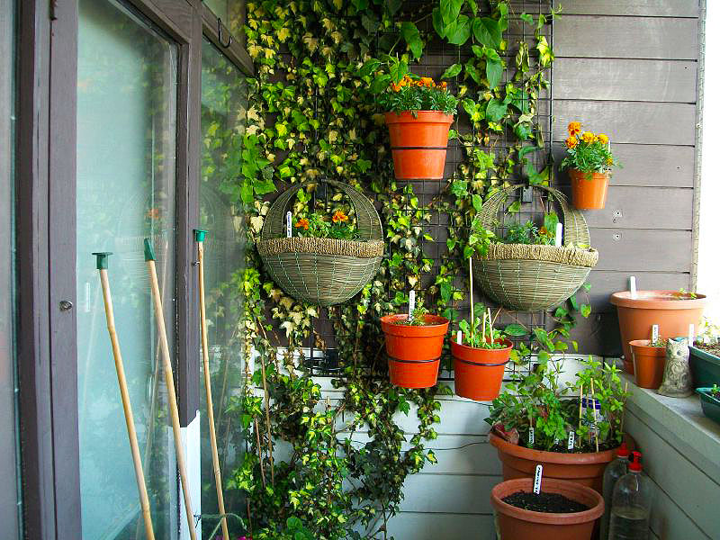
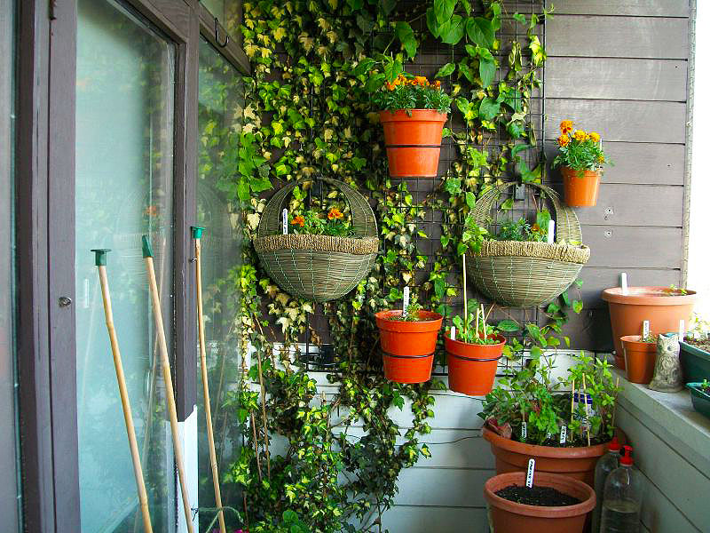
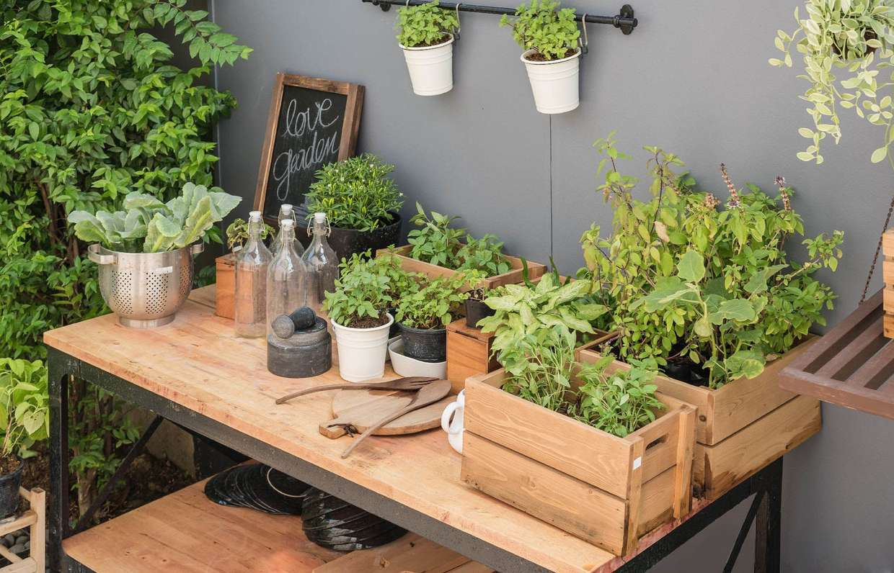
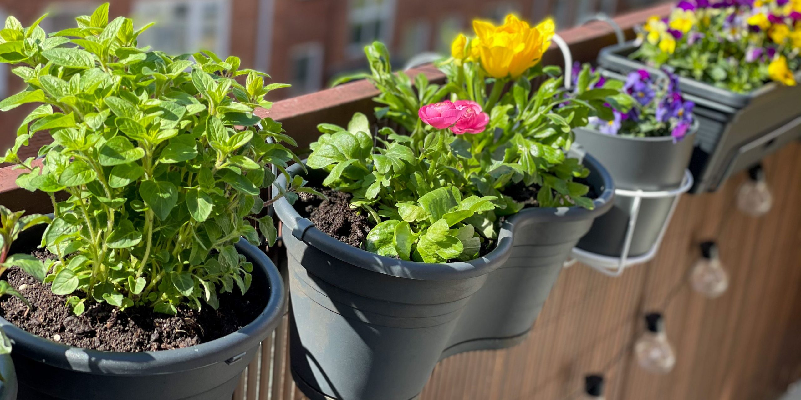

Вертикальный сад
Используйте стены и ограждения балкона, чтобы разместить горшки и кашпо вертикально. Это экономит место и создаёт прекрасный живой декор.

Преобразите свой балкон в настоящий зеленый рай — легко, интересно и красиво!
Используйте стены и ограждения балкона, чтобы разместить горшки и кашпо вертикально. Это экономит место и создаёт прекрасный живой декор.
Выращивайте свежие овощи и зелень рядом с домом. Черри-помидоры, базилик, горох и другие культуры отлично подходят для балконного огорода.
Цветочные композиции и ароматные травы наполнят балкон красотой и уютом. Возможности безграничны — создавайте свои уникальные сочетания!
